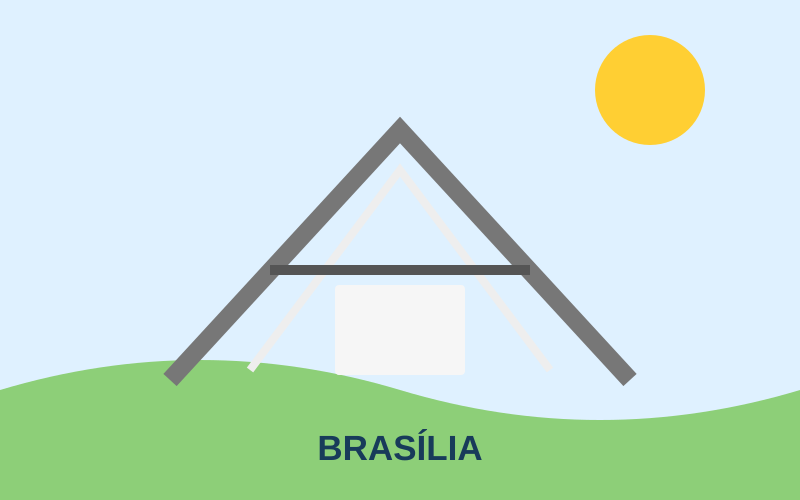
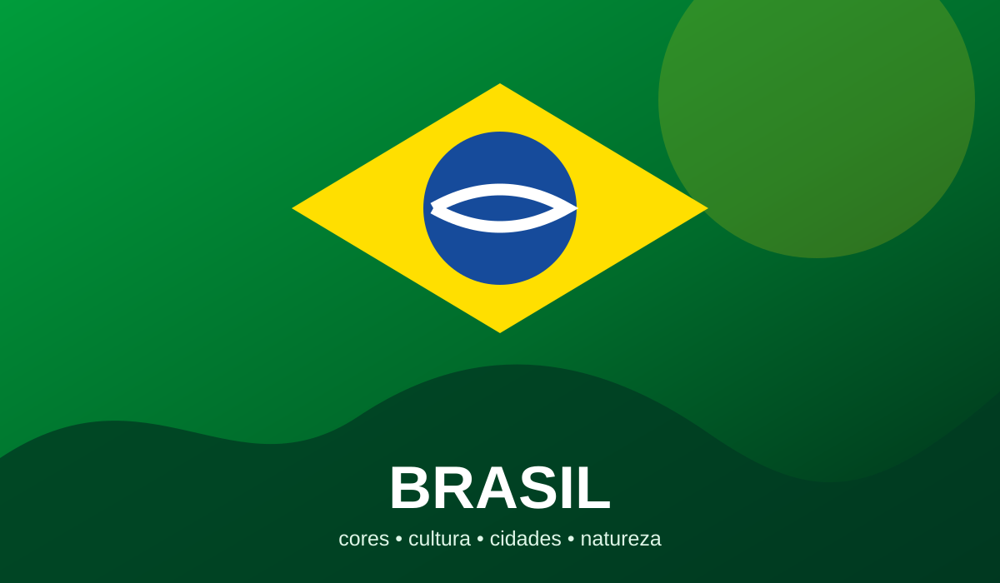
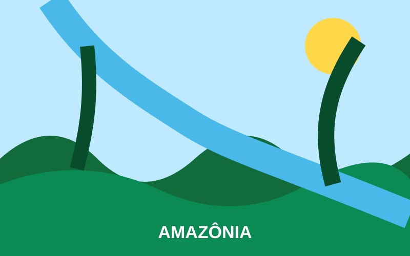
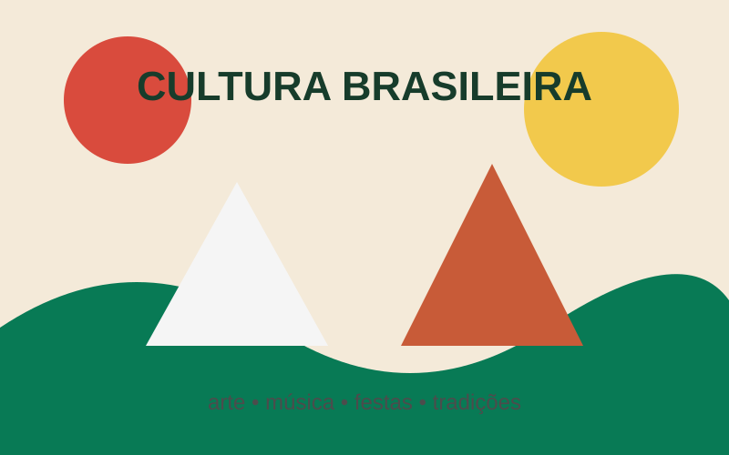
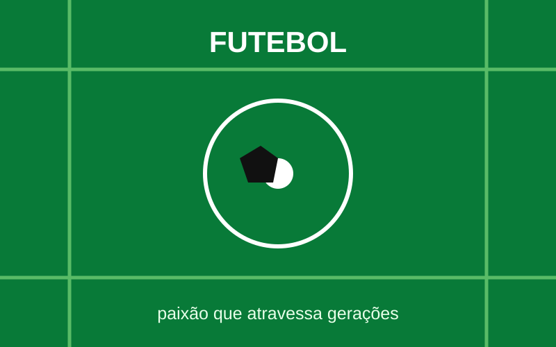

Centro-Oeste
Preparando uma viagem pelo Brasil...
UM PAÍS, MILHARES DE HISTÓRIAS
Uma viagem pelas paisagens, cidades, culturas, sabores, arquitetura e paixões que ajudam a contar a história do Brasil.

O país reúne diferentes paisagens, histórias e manifestações culturais. Este site organiza alguns desses elementos em uma experiência simples e responsiva.
GEOGRAFIA
Escolha um cartão para ver mais informações.



IDENTIDADE
Da música popular às festas regionais, da culinária à arte urbana, diferentes tradições convivem e se renovam.

PAIXÃO NACIONAL
Clubes, campeonatos, craques e torcidas fazem do futebol uma parte marcante da cultura esportiva brasileira.
NOVA SEÇÃO DO MENU
Uma área extra para destacar cidades, arquitetura, turismo, projetos culturais ou qualquer outro tema brasileiro.
DESIGN
O visual usa verde, amarelo, azul e tons neutros, mantendo contraste e hierarquia.